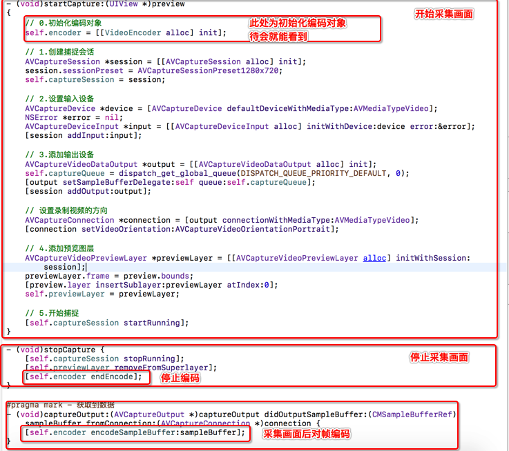
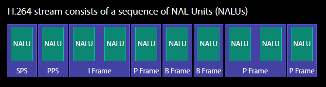

iOS硬编码实现
前言
- 在上一篇中，我们已经知道iOS编码的一些概念知识，从现在开始，我们可以正式对采集到的视频进行编码
- 这里我们重点介绍硬编码的使用方式，也就是VideoToolBox框架的使用
- 编码的流程：采集--> 获取到视频帧--> 对视频帧进行编码 --> 获取到视频帧信息 --> 将编码后的数据以NALU方式写入到文件
视频采集
- 视频采集我们已经在前面进行了介绍和学习，所有这里就直接贴代码，只是我对采集过程进行了一些简单的封装
视频硬件编码
- 初始化压缩编码会话（VTCompressionSessionRef）
- 在VideoToolbox框架的使用过程中，基本都是C语言函数
- 初始化后通过
VTSessionSetProperty设置对象属性
- 编码方式：H.264编码
- 帧率：每秒钟多少帧画面
- 码率：单位时间内保存的数据量
- 关键帧（GOPsize)间隔：多少帧为一个GOP
- 准备编码
- 代码如下：
- (void)setupVideoSession {
self.frameID = 0;
int width = [UIScreen mainScreen].bounds.size.width;
int height = [UIScreen mainScreen].bounds.size.height;
VTCompressionSessionCreate(NULL, width, height, kCMVideoCodecType_H264, NULL, NULL, NULL, didCompressH264, (__bridge void *)(self), &_compressionSession);
VTSessionSetProperty(self.compressionSession, kVTCompressionPropertyKey_RealTime, kCFBooleanTrue);
int fps = 30;
CFNumberRef fpsRef = CFNumberCreate(kCFAllocatorDefault, kCFNumberIntType, &fps);
VTSessionSetProperty(self.compressionSession, kVTCompressionPropertyKey_ExpectedFrameRate, fpsRef);
int bitRate = 800*1024;
CFNumberRef bitRateRef = CFNumberCreate(kCFAllocatorDefault, kCFNumberSInt32Type, &bitRate);
VTSessionSetProperty(self.compressionSession, kVTCompressionPropertyKey_AverageBitRate, bitRateRef);
NSArray *limit = @[@(bitRate * 1.5/8), @(1)];
VTSessionSetProperty(self.compressionSession, kVTCompressionPropertyKey_DataRateLimits, (__bridge CFArrayRef)limit);
int frameInterval = 30;
CFNumberRef frameIntervalRef = CFNumberCreate(kCFAllocatorDefault, kCFNumberIntType, &frameInterval);
VTSessionSetProperty(self.compressionSession, kVTCompressionPropertyKey_MaxKeyFrameInterval, frameIntervalRef);
VTCompressionSessionPrepareToEncodeFrames(self.compressionSession);
}
- 将输入的帧进行编码
- 将CMSampleBufferRef转成CVImageBufferRef
- 开始对CVImageBufferRef进行编码
- (void)encodeSampleBuffer:(CMSampleBufferRef)sampleBuffer {
CVImageBufferRef imageBuffer = (CVImageBufferRef)CMSampleBufferGetImageBuffer(sampleBuffer);
CMTime presentationTimeStamp = CMTimeMake(self.frameID++, 1000);
VTEncodeInfoFlags flags;
OSStatus statusCode = VTCompressionSessionEncodeFrame(self.compressionSession,
imageBuffer,
presentationTimeStamp,
kCMTimeInvalid,
NULL, (__bridge void * _Nullable)(self), &flags);
if (statusCode == noErr) {
NSLog(@"H264: VTCompressionSessionEncodeFrame Success");
}
}
- 当编码成功后，将编码后的码流写入文件
- 编码成功后会回调之前输入的函数
- 1> 先判断是否是关键帧：
- 如果是关键帧，则需要在写入关键帧之前，先写入PPS、SPS的NALU
- 取出PPS、SPS数据，并且封装成NALU单元，写入文件
- 2> 将I帧、P帧、B帧分别封装成NALU单元写入文件
- 写入后，数据存储方式：
- 代码如下：
void didCompressH264(void *outputCallbackRefCon, void *sourceFrameRefCon, OSStatus status, VTEncodeInfoFlags infoFlags, CMSampleBufferRef sampleBuffer) {
if (status != noErr) {
return;
}
VideoEncoder* encoder = (__bridge VideoEncoder*)outputCallbackRefCon;
bool isKeyframe = !CFDictionaryContainsKey( (CFArrayGetValueAtIndex(CMSampleBufferGetSampleAttachmentsArray(sampleBuffer, true), 0)), kCMSampleAttachmentKey_NotSync);
if (isKeyframe)
{
CMFormatDescriptionRef format = CMSampleBufferGetFormatDescription(sampleBuffer);
size_t sparameterSetSize, sparameterSetCount;
const uint8_t *sparameterSet;
CMVideoFormatDescriptionGetH264ParameterSetAtIndex(format, 0, &sparameterSet, &sparameterSetSize, &sparameterSetCount, 0 );
size_t pparameterSetSize, pparameterSetCount;
const uint8_t *pparameterSet;
CMVideoFormatDescriptionGetH264ParameterSetAtIndex(format, 1, &pparameterSet, &pparameterSetSize, &pparameterSetCount, 0 );
NSData *sps = [NSData dataWithBytes:sparameterSet length:sparameterSetSize];
NSData *pps = [NSData dataWithBytes:pparameterSet length:pparameterSetSize];
[encoder gotSpsPps:sps pps:pps];
}
CMBlockBufferRef dataBuffer = CMSampleBufferGetDataBuffer(sampleBuffer);
size_t length, totalLength;
char *dataPointer;
OSStatus statusCodeRet = CMBlockBufferGetDataPointer(dataBuffer, 0, &length, &totalLength, &dataPointer);
if (statusCodeRet == noErr) {
size_t bufferOffset = 0;
static const int AVCCHeaderLength = 4;
while (bufferOffset < totalLength - AVCCHeaderLength) {
uint32_t NALUnitLength = 0;
memcpy(&NALUnitLength, dataPointer + bufferOffset, AVCCHeaderLength);
NALUnitLength = CFSwapInt32BigToHost(NALUnitLength);
NSData* data = [[NSData alloc] initWithBytes:(dataPointer + bufferOffset + AVCCHeaderLength) length:NALUnitLength];
[encoder gotEncodedData:data isKeyFrame:isKeyframe];
bufferOffset += AVCCHeaderLength + NALUnitLength;
}
}
}
- (void)gotSpsPps:(NSData*)sps pps:(NSData*)pps
{
const char bytes[] = "\x00\x00\x00\x01";
size_t length = (sizeof bytes) - 1;
NSData *ByteHeader = [NSData dataWithBytes:bytes length:length];
[self.fileHandle writeData:ByteHeader];
[self.fileHandle writeData:sps];
[self.fileHandle writeData:ByteHeader];
[self.fileHandle writeData:pps];
}
- (void)gotEncodedData:(NSData*)data isKeyFrame:(BOOL)isKeyFrame
{
NSLog(@"gotEncodedData %d", (int)[data length]);
if (self.fileHandle != NULL)
{
const char bytes[] = "\x00\x00\x00\x01";
size_t length = (sizeof bytes) - 1;
NSData *ByteHeader = [NSData dataWithBytes:bytes length:length];
[self.fileHandle writeData:ByteHeader];
[self.fileHandle writeData:data];
}
}